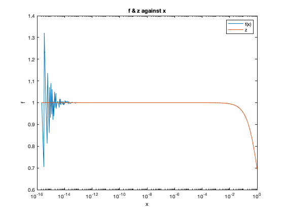

clear all
close all
C = @(x) abs((x - (x+1)*log(x + 1))/((x+1)*log(x + 1)));
n = 10;
xl = linspace(-0.05,-0.0000001,n);
xr = linspace(0.0000001,0.05,n);
cl = zeros(n,1);
cr = zeros(n,1);
for i= 1:n
cl(i) = C(xl(i));
cr(i) = C(xr(i));
end
Table = table(xl',cl,xr',cr, 'VariableNames',{'x<0','C(x<0)','x>0','C(x>0)'})
fprintf('The value of x near zero for the condition number, are all small meaning the function is well condition and stable,\n since a small input to the condition number yeild a small output, as observed from the table for different values of x\n near zero\n');
fprintf('3b.\n');
f = @(x) (log(x+1))./x;
j = [0:520]';
xj = 2.^(-52 + j./10);
fj = f(xj);
semilogx(xj,fj);
hold on
title('f & z against x');
xlabel('x'); ylabel('f');
fprintf('The algorithm looks to be unstable near x = 0, according to the distortion of the curve observed \n near that point \n');
fprintf('3c.\n');
z = 1 + xj;
y = log(z)./(z-1);
semilogx(xj,y);
legend('f(x)','z');
fprintf('Near x = 0, their is no noise the curve is stable, but in part (b), there is alot of noise in the region \n');
Table =
10×4 table
x<0 C(x<0) x>0 C(x>0)
____________________ ___________________ ___________________ ____________________
-0.05 0.0260908287486144 1e-07 5.05838629918435e-08
-0.0444444555555556 0.0230796152641136 0.00555564444444444 0.00276502570151982
-0.0388889111111111 0.0200974832032458 0.0111111888888889 0.00550466255089419
-0.0333333666666667 0.0171439805604763 0.0166667333333333 0.00821933465005636
-0.0277778222222222 0.0142186649472498 0.0222222777777778 0.0109094085358283
-0.0222222777777778 0.0113211033332172 0.0277778222222222 0.0135752433734707
-0.0166667333333333 0.00845087179580214 0.0333333666666667 0.0162171911443507
-0.0111111888888889 0.00560755527792527 0.0388889111111111 0.0188355968277381
-0.00555564444444444 0.0027907473534124 0.0444444555555556 0.021430798577109
-1e-07 5.052635999267e-08 0.05 0.0240031278910547
The value of x near zero for the condition number, are all small meaning the function is well condition and stable,
since a small input to the condition number yeild a small output, as observed from the table for different values of x
near zero
3b.
The algorithm looks to be unstable near x = 0, according to the distortion of the curve observed
near that point
3c.
Near x = 0, their is no noise the curve is stable, but in part (b), there is alot of noise in the region
